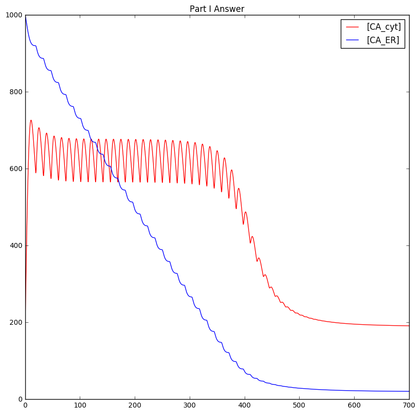
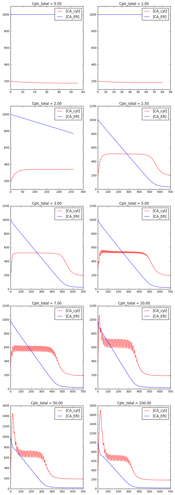

BIN505 F16 Mini-Project 1 Solution
Table of Contents
1 Preamble
import scipy.integrate as integrate from scipy.integrate import quad import matplotlib.pyplot as pyplot import numpy as numpy %matplotlib inline %config InlineBackend.figure_format = 'png'
2 Model
2.1 Constants
2.1.1 IDs
For easy access to the concentrations array. We use constants instead of having to remember the order of the species in the array.
GALPHA_GTP = 0 APLC = 1 IP3 = 2 CA_ER = 3 CA_CYT = 4
2.1.2 Parameters
Constants given in the paper.
cplc_total = 2.0 Kp = 4.0 Kd = 10.0 Kr = 200.0 n = 4.0 Kg = 25.0 m = 2.0 Ks = 25.0 Kc1 = 1000.0 Kc2 = 2000.0 w = 3.0 Ker = 75.0 k0 = 0.1 k1 = 3.4 k2 = 4.0 k3 = 4.5 k4 = 1.2 k5 = 0.12 k6 = 14.0 k7 = 2.0 k8 = 10500.0 k9 = 600.0 k10 = 3000.0 k11 = 260.0
2.2 Rules
2.2.1 DG
DG concentration is assumed to be equal to IP3, always.
def dg(concentrations): return concentrations[IP3]
2.2.2 PLC
Total PLC concentration (active + not) is constant
def plc(concentrations): return cplc_total - concentrations[APLC]
2.2.3 RAPLC
APLC catalyzes the dephosphorylation of \(G_{\alpha}-GTP\)
def R_aplc(concentrations): return (concentrations[APLC]) / (Kp + concentrations[APLC])
2.2.4 RPKC
\(G_{\alpha}-GTP\) decrease due to PKC receptors
def R_pkc(concentrations): return (((dg(concentrations)/(Kd + dg(concentrations))) *concentrations[CA_CYT] )/(Kr + concentrations[CA_CYT]))
2.2.5 RGalpha GTP
\(G_{\alpha}GTP\) effect on PLC activation
def R_galpha_gtp(concentrations): return (concentrations[GALPHA_GTP] ** n)/((Kg ** n) + (concentrations[GALPHA_GTP] ** n))
2.2.6 RDG
DG effect on PLC activation
def R_dg(concentrations): return (dg(concentrations) ** m) / ((Kd ** m) + (dg(concentrations) ** m))
2.2.7 RIP3
IP3 effect on ER membrane (Ca release)
def R_ip3(concentrations): return ( concentrations[IP3] ** 3 ) / ( ( Ks ** 3 ) + ( concentrations[IP3] ** 3 ) )
2.2.8 RCyt1
def R_cyt1(concentrations): return concentrations[CA_CYT] / (Kc1 + concentrations[CA_CYT])
2.2.9 RCyt2
def R_cyt2(concentrations): return concentrations[CA_CYT] / (Kc2 + concentrations[CA_CYT])
2.2.10 RER
def R_er(concentrations): return (concentrations[CA_ER] ** w) / ( ( Ker ** w ) + ( concentrations[CA_ER] ** w ) )
2.3 Reactions
2.3.1 Reaction 1
Spontaneous formation of \(G_{\alpha}GTP\). Constant (zero-order) rate law reaction.
\begin{equation} \emptyset \xrightarrow{k_0} G_{\alpha}GTP \end{equation}2.3.2 Reaction 2
The autocatalytic part of the formation of \(G_{\alpha}GTP\) as explained in the paper (see pg.511, col. 2; and Fig. 1)
\begin{equation} G_{\alpha}GDP \xrightarrow{k_1} G_{\alpha}GTP \end{equation}2.3.3 Reaction 3
The hydrolysis of \(G_{\alpha}GTP\) to \(G_{\alpha}GDP\), accelerated by APLC
\begin{equation} G_{\alpha}GTP \xrightarrow[APLC]{k_2} G_{\alpha}GDP \end{equation}2.3.4 Reaction 4
Further phosphorylation of \(G_{\alpha}GTP\), accelerated by PKC
\begin{equation} G_{\alpha}GTP \xrightarrow[PKC]{k_3} G_{\alpha}' \end{equation}2.3.5 Reaction 5
Activation of PLC, determined by active G-proteins and DG.
\begin{equation} PLC \xrightarrow[G_{\alpha}GTP, DG]{k_4} APLC \end{equation}2.3.6 Reaction 6
Spontaneous deactivation of APLC
\begin{equation} APLC \xrightarrow{k_5} PLC \end{equation}2.3.7 Reaction 7
Formation of \(IP_3\) by hydrolysis of \(PIP_2\) controlled by active PLC (APLC)
\begin{equation} PIP_2 \xrightarrow[APLC]{k_6} IP_3 \end{equation}2.3.8 Reaction 8
Metabolization of \(IP_3\) to other, irrelevant products (e.g. IP2, IP4)
\begin{equation} IP_3 \xrightarrow{k_7} \emptyset \end{equation}2.3.9 Reaction 9
The two way regulation of free \(Ca^{2+}\) between the ER and the cytoplasm, through and equilibrium of IP3 mediated calcium channel and ATP dependent ion pumps. \[\require{mhchem}\]
\begin{equation} \ce{Ca^{2+}_{Cyt} <=>[{k_9}][{k_8, IP_3}] Ca^{2+}_{ER}} \end{equation}2.3.10 Reaction 10
Calcium loss to extracellular space
\begin{equation} Ca^{2+}_{Cyt} \xrightarrow{k_{10}} \emptyset \end{equation}2.4 ODEs
2.4.1 Equation System
def ode_system(c, t): return [ v1(c) + v2(c) - v3(c) - v4(c), #dGALPHA_GTP/dt v5(c) - v6(c), #dAPLC/dt v7(c) - v8(c), #dIP3/dt -0.001 * v9(c), #dCA_ER/dt (0.01 * v9(c)) + (0.05 * v11(c)) - (0.05 * v10(c)) #dCA_CYT/dt ]
2.4.2 Solver
t = numpy.linspace(0,700,10000) def solver(): #Initial state conc0 = [1.0, #GALPHA_GTP 0.9*cplc_total, #APLC 1.0, #IP3 1000.0, #CA_ER 200.0 #CA_Cyt ] return integrate.odeint(ode_system, conc0,t)
3 Part I Solution
3.1 Plot
cplc_total = 10.0 pyplot.figure(figsize=(10,10)) results = solver() pyplot.plot(t, results[:,CA_CYT],'r',label='[CA_cyt]') pyplot.plot(t, results[:,CA_ER],'b',label='[CA_ER]') pyplot.title("Part I Answer") pyplot.legend()

4 Part II Solution
4.1 Plot
subplot_number = 0 values = [0.5, 1.0, 2.0, 2.5, 3.0, 5.0, 7.0, 20.0, 50.0, 100.0] pyplot.figure(figsize=(10,30)) for val in values: subplot_number += 1 ncols = 2 nrows = len(values) // 2 cplc_total = val results = solver() pyplot.subplot(nrows, ncols, subplot_number) pyplot.plot(t, results[:,CA_CYT],'r',label='[CA_cyt]') pyplot.plot(t, results[:,CA_ER],'b',label='[CA_ER]') pyplot.title("Cplc_total = {:.2f}".format(val)) pyplot.legend()

4.2 Discussion
The system is relatively robust to changes in total PLC concentration. As long as there is some PLC enzyme available (as little as 2.5 nM, in other words 25% of the original amount), the system continues to work, although without oscillation.
The system regains oscillation around 4.0 - 5.0 nM. The oscillation frequency is independent of the total PLC concentration. It remains constant at about one oscillation every 14 seconds (7 oscillations every 100 seconds, counted visually from the plots). The response time is affected by the total PLC amount. Amounts lower than 7.0 nM result in increased response time.
After 7.0 nM, higher amounts of total PLC do not affect the system much. Oscillation frequency remains roughly the same. There is a slight decrease in response time with very high PLC concentrations (e.g. PLCtotal > 50.0).
In summary, the system is relatively robust to an overconcentration of total PLC. It is more sensitive underconcentration, and there is a point (roughly around 2.5 nM, by inspection) where it will shut down.